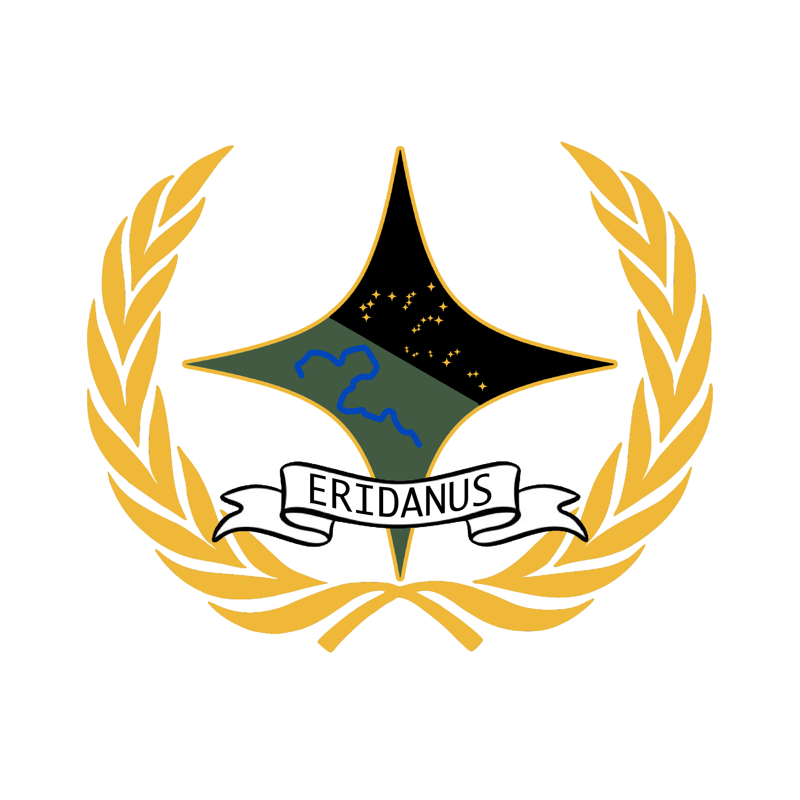

The Coat of Arms of the Republic consists of a golden wreath surrounding a four point star, with the title of the Republic displayed across the bottom.
The four point star is divided diagonally though the middle. The top right is black and contains the constellation Eridanus. The bottom left half is green and contains a river, representing Creek River. The river and constellation mirror each other, and form the basis of the motto of the Armed Forces of the Eridanese: "From the River to the Stars!"
The green and gold flag of the Republic represents many things. Obviously, in the centre of the flag is a simplified rendition of the constellation which the country borrows its name.
The colours of the flag represent the cultural connection to Australia, despite the fierce independence of the Republic. The green also represents the colours of nature that covers Eridanus. The gold represents the colour of the sun, the very star that the majestic beauty of Eridanus owes its existence to.
The celestial river of the constellation represents rivers all across the country, and especially Creek River, a small but important waterway that holds a special place in the hearts of Eridanese people no matter where they are.
